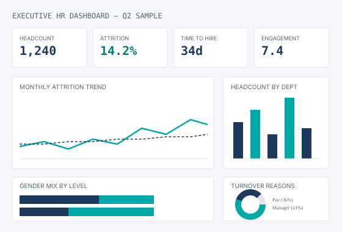

OlaDigitalHub gives growing businesses a part-time analytics partner and the dashboards to go with it — so you know why people are leaving, where to hire next, and which teams need attention, every month, not once a year.
Most HR teams already have a Power BI file nobody opens. What's missing isn't a chart — it's someone who looks at the numbers every month and tells you what to do about them.
That's the job. Not "Power BI builder." Fractional People Analytics Partner.
Attrition broken down by manager, tenure band, and regretted vs. non-regretted — not just a headline percentage.
Workforce plans tied to revenue and workload, so headcount requests are backed by a number, not a hunch.
Manager-level scorecards that flag risk early — engagement, absence, and attrition read together, not apart.
One board-ready report a month, in plain English, so leadership stops asking HR to "pull some numbers."
A part-time analytics function for companies too small for a Head of People Analytics but too data-heavy to keep guessing. You get a standing dashboard, a monthly board report, and a person to call when the CEO asks "why."

The same dashboards used with fractional clients, packaged so you can build them yourself this afternoon.
Headcount, attrition, diversity, time-to-hire and cost-per-hire in one board-ready file.
50+ HR metrics defined with formulas, benchmarks, and the story each one tells leadership.
The monthly board pack structure — narrative, charts, and the questions leadership actually asks.
Northfield Retail Group had a turnover problem no one could explain. A dashboard that separated regretted from non-regretted attrition — and a manager scorecard — changed that.
Read the case study— Illustrative, based on an anonymized engagement
30 minutes. No slides. Bring one HR question you can't currently answer with data — we'll map out what it would take.
Book a Discovery Call